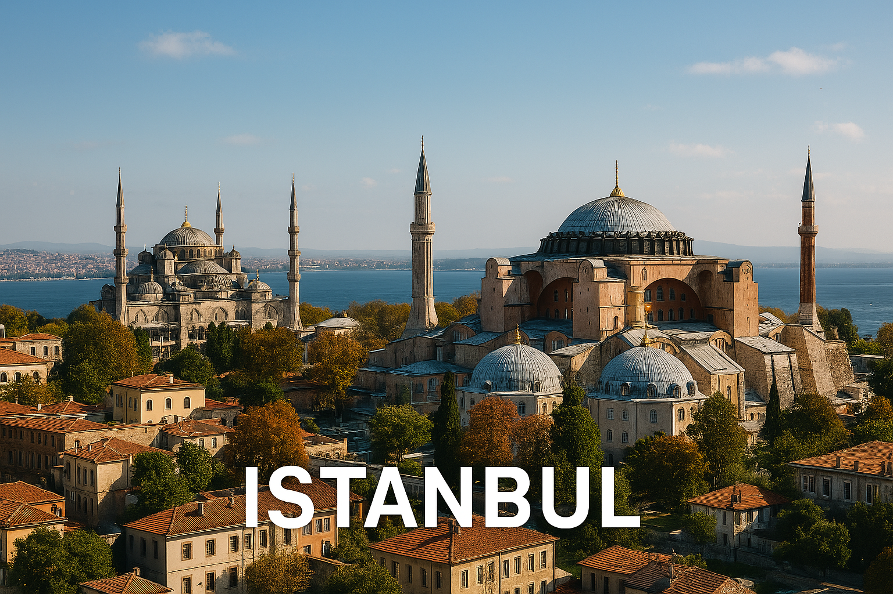

Istanbul est une ville unique au monde, située à la frontière de l’Europe et de l’Asie. Elle est célèbre pour ses mosquées magnifiques et son histoire fascinante.
Sainte-Sophie a été tour à tour une basilique, une mosquée, un musée... et de nouveau une mosquée ! 🕌
Quel monument célèbre se trouve à Istanbul ?